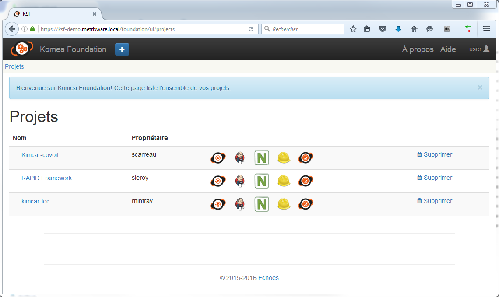

Le SSO (Single Sign On) permet d’utiliser les différents outils de l’usine logicielle sans avoir besoin de s’authentifier avec chaque outil. Idéalement, l’authentification est faite dans l’annuaire de l’entreprise (AD, OpenLDAP, etc.) puis propagée par le SSO vers les composants de l’usine logicielle.
Il est ainsi possible d’utiliser l’annuaire de l’entreprise pour définir l’ensemble de rôles des utilisateurs de l’usine. La configuration des outils pourra ainsi se faire plus rapidement.
En cas d’absence de SSO, une entreprise s’expose à :
Exemple d’outils Open source :
Dans KSF, nous avons choisi d’utiliser CAS branché sur un annuaire AD/LDAP.
Aujourd’hui, les différents outils sont liés au SSO :
Les outils restants sont compatibles avec AD/LDAP :
Conditions initiales : aucun utilisateur n’est identifié dans KSF
L’utilisateur clique sur l’item “Login” du bandeau
Un formulaire s’affiche pour entrer login / mot de passe
L’authentification est lancée auprès du SSO
Une fois l’utilisateur authentifié

Le bandeau affiche son nom suivi d’un bouton “Logout”
Un menu Projet apparait avec la liste des Projets dans lequel le développeur peut intervenir, un item “+” se situe en haut à gauche pour créer un projet
L’utilisateur peut constater qu’il est authentifié dans les logiciels suivants :
- Komea Foundation
- Redmine
- Jenkins
- Komea Dashboard (s’il est installé)